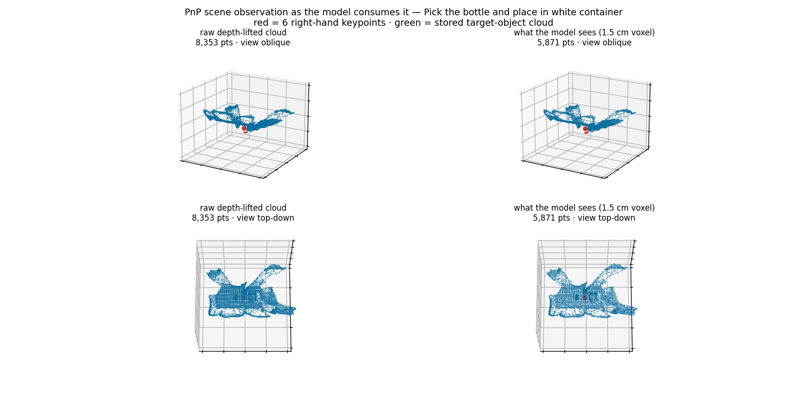
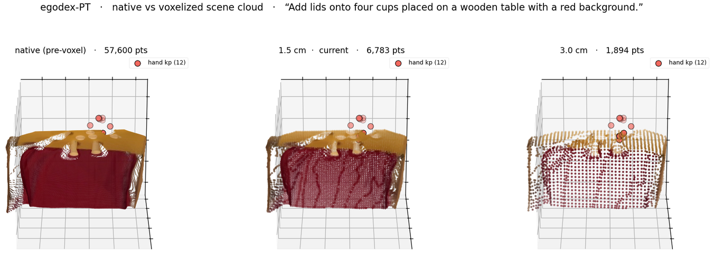

01What the model is
The port from a parallel gripper to a human hand, and what stayed fixed.
Dex-PointWAM takes a single RGB-D observation, back-projects it to a point cloud, and encodes it with a PTv3 backbone at a 1.5 cm voxel grid plus a frozen DINOv3 image featuriser. A RobotTrajDiT — one token per robot point, cross-attending to frozen CLIP word tokens for the instruction — regresses the whole future trajectory. A separate PointWorld dynamics head predicts the scene trajectory over the same horizon; that branch is the "world model" ablated below.
The dexterous change is the robot representation: 12 keypoints = 2 hands × [wrist + 5 fingertips]. There is no gripper command, so the gripper BCE loss is weighted to zero and grasp is left implicit in the fingertip flow. One consequence worth stating plainly, because it shapes everything downstream: the model emits its entire T−1 step trajectory in a single forward pass. There is no recurrence and no cross-chunk state, so agreement between one chunk and the next is not represented anywhere in the architecture — nothing in training penalises a plan that contradicts the previous plan.

02Does world-modelling help the action head?
100K clips, 15 epochs, three seeds per arm. Metric is held-out robot_l2_moved in metres — lower is better.
| config | seed 42 | seed 43 | seed 44 | spread |
|---|---|---|---|---|
| world-model λ=1 | 0.06435 | 0.06492 | 0.06452 | ±0.03 cm |
| robot-only (predict_scene=false) | 0.06794 | 0.06689 | 0.06497 | ±0.15 cm |
The world-model arm is better on every seed and is also five times tighter across seeds. The variance result is the more interesting half: scene supervision is doing something stabilising, not just adding a few percent. Note the overlap at seed 44 — with three seeds this is a ~3% effect, which is why it needed re-testing at scale rather than being called settled here.
03Sweet-spot matrix
100K clips / 15 epochs, single runs unless noted. Each row varies one thing.
| lever | setting | robot_l2_moved | read |
|---|---|---|---|
| voxel grid | 1.5 cm | 0.0644 | baseline |
| voxel grid | 3 cm | 0.06527 | monotonic degradation — keep 1.5 cm |
| voxel grid | 6 cm | 0.06833 | |
| voxel grid | 10 cm | 0.07256 | |
| scene contents | fullscene (agent kept in cloud) | 0.06402 | best single value (1 seed) |
| combo | λ=10 × 3 cm | 0.06655 | levers do not stack; moot once 1.5 cm wins |
Voxel resolution is monotonic and steep: going from 1.5 cm to 10 cm costs 12.7%, more than the entire world-model effect. fullscene — keeping the hand's own surface in the scene cloud — became the default from here on, and it matters more than its 0.4% margin suggests: it fixes what the model's input contains, which is exactly the contract that has to be reproduced at deployment.
04Scale-up: 5.2M clips
Merged fullscene corpus, 40K steps at batch 256 (~2 epochs). Fixed held-out set of 40K clips (egodex_eval40k_fullscene), evaluated at model-last@40K.
| config | robot_l2_moved | vs its 100K counterpart |
|---|---|---|
| E1 world-model λ=1 (fullscene) | 0.06057 ± 0.00017 | −5.9% (from 0.0644) — record |
| E2 robot-only | 0.06357 ± 0.00018 | −4.5% (from 0.0666) |
Three readings, in order of how much they constrain what comes next:
- Data scale alone beats every 100K configuration. E2 — the ablated model at scale — is better than every tuned 100K run including the world-model ones. No amount of 100K-scale tuning substitutes for data.
- The world-model gap survives scaling and grows. −4.7% at z≈12, against ~3% at 100K. This is the result that mattered: the branch is not a small-data crutch.
- The budget was not spent. E1 validation was still falling at 36K→40K (0.0636→0.0618). Every number in this table is a 2-epoch number.
For completeness, E1's scene branch reached scene l2_moved 0.04610 — the world model is genuinely predicting scene motion, not degenerating to a copy of the input.

05What this log does not establish
Stated up front so the next log is not read as a contradiction of this one.
Every number above is open-loop: the model is shown a held-out observation and its predicted trajectory is compared to the recorded one. That measures whether the model has learned the demonstration distribution. It does not measure whether rolling the model out in a closed loop — where its own predictions determine the next observation — produces useful behaviour, because open-loop evaluation never visits a state the model itself created.
It also says nothing about transfer to a robot. EgoDex is egocentric human video; the target is an OpenArm with an Inspire hand in an Isaac Lab pick-and-place task. Finetuning onto that corpus, deploying through a bridge, and measuring success rate under the simulator's own success predicate is the subject of the closed-loop evaluation log, and the answer there is materially harsher than this one.